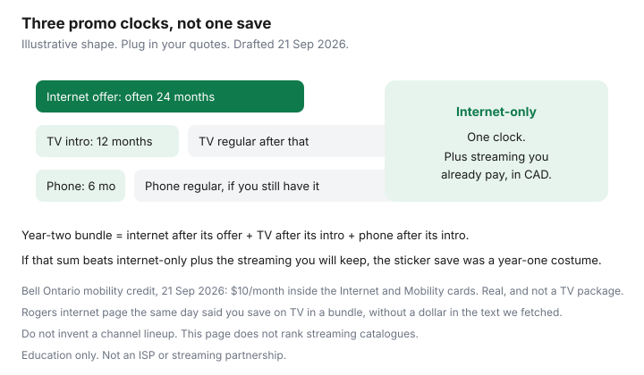

Internet · Canada
Are Internet + TV + Phone Bundles Worth It in Canada? Unbundle Math That Actually Works
A Canadian bundle “saves” money in the month every discount is on at once. TV intros are often shorter than internet terms. Home phone is often a product nobody answers. Mobility credits are sometimes the only real discount, and only if you wanted that phone plan. The worksheet below separates those clocks. It does not rank streaming catalogues, and it does not pretend Telus or Videotron published one national price on the day we drafted this. Education only.
Disclosure: Streaming devices (a puck or stick for a TV that cannot run the apps you already pay for) and streaming-service trials are offer types. Saving Optimizer does not claim a live commission and does not steer you to a specific catalogue. No Rogers, Bell, Telus, or Videotron partnership.
Key takeaways
- Write three end dates: internet offer, TV intro, home-phone intro. The bundle’s second year is the sum of whatever each line costs after its own promo.
- Compare that sum with internet-only plus the streaming dollars you will still pay. If you will not watch the TV package in month 13, it is not a save.
- Bell’s Ontario Internet and Mobility page (21 Sep 2026) shows a concrete $10/month credit for ordering internet and mobility together. Rogers’ internet page the same day said TV is cheaper in a bundle and did not state the dollar in the text we retrieved.
- A home phone at $0 for a few months is a future line item. Keep it only if the ongoing internet discount is larger than the phone you do not use.
- Negotiation line that matches the math: you are keeping internet, and you are removing TV and phone unless those lines beat à-la-carte after their promos. Québec: price Fizz before Helix.
Sticker bundle savings vs a-la-carte after promo expiry
Agents sell the first bill. You pay the twelfth and the twenty-fourth. Build one row per product and two prices per row (intro, then regular). A “save $40 a month” banner that depends on a 12-month TV credit and a 24-month internet credit is a $40 save only while both credits exist. When TV resets, the banner is over even if internet still looks cheap.
À-la-carte here means internet from whoever wins the address sheet, plus only the television you will watch, plus no home phone unless you use one. It is not a moral duty to cancel cable. Some households watch sports or local news that way and should keep the package. They should still know the post-promo number.

TV package vs streaming stack cost in CAD
Do this in dollars you already pay, not in a ranking of apps. Write the monthly total of the streaming services you will keep for the next year. Write the TV package’s intro price and its regular price from the quote in your hand. If the regular TV price is higher than the streaming total, and you are not gaining channels you will actually watch, the package loses after the intro. If regular TV is $20 and it replaces $40 of sports streaming you would buy anyway, the package can win. This site’s Entertainment guides can go deeper on catalogues later. The internet bill only needs the total.
Hardware: if the television already runs the apps, do not buy a device to “complete” the cord-cutting. If it does not, a streaming device is a one-time purchase, not a monthly ISP fee. One device per main TV is the usual need. A trial month of a service is useful only if you cancel before it renews. Put the renewal date on the same calendar as the ISP promo.
Home phone line you never use
Providers still attach a phone line because it makes a bundle look larger. TekSavvy’s offers page, read 21 Sep 2026, has advertised TekTalk unlimited at $0 for six months with internet. That is a clean example of the shape, not a recommendation: month seven has a price, and you will not notice it if you never plug in the adapter. Ask two questions. Does anyone want this number? Does the internet discount survive if the phone is removed the month the intro ends? If the answer to the first is no and the second is yes, schedule the removal now. If the internet “bundle save” is smaller than the ongoing phone fee, the phone is a charge wearing a ribbon.
Alarm systems and medical devices that need a copper line are a real exception. Do not cancel that line because a worksheet looks tidy. Confirm with the alarm company first. That constraint is safety, not loyalty to the ISP.
Mobile + home internet loyalty discounts—when they help
Bell’s Ontario page fetched 21 Sep 2026 is the cleanest public example we locked. Rates shown for new residential customers already include a $10/month credit when internet and mobility are ordered together. The Fibe 500 breakdown was $105, minus $15 for a two-year term credit, minus $10 multi-service, displaying $80. A banner also said “up to $25/month.” The line item we could read was $10. Trust the line item. The credit helps when the mobility plan is one you would buy on its own. It hurts when you abandon a cheaper flanker phone plan to unlock $10 on internet.
Rogers, Telus, and Videotron run similar loyalty math in different clothing: a few dollars off internet if wireless stays in the family, or a perk that vanishes when you move the phone. Write the wireless plan’s standalone price next to the bundled price. The difference is the true home-internet discount. If it is $5 and the wireless plan is worse in the places you stand, decline it. This is not a mobile-plan ranking. It is a test for whether the phone is subsidizing the modem or the modem is subsidizing a bad phone plan.
Negotiation tactic: threaten to unbundle, keep internet-only
Say the decision you already made. “I am keeping internet at this address. I am removing TV and home phone unless you can email a price for each that beats what I pay after the intro, for the whole internet term.” Then stop talking. Agents fill silence with a bigger bundle. You want three numbers in writing, or permission to drop two products without touching the internet rate you just negotiated.
Do this after the internet winback, not instead of it. The Rogers script and the Bell playbook get the access line right. Unbundling is the second call if the first offer only works when you add television. If they raise internet because you removed TV, ask them to point at that condition in the contract. Sometimes the condition is real. Sometimes it is a save attempt. The email settles it.
Worked examples for Rogers, Bell, Telus, Videotron
Rogers and Bell internet lines below are dated public cards. TV and phone cells are blank on purpose where we did not lock a 21 Sep 2026 tariff. The illustrative column is a teaching shape, labelled as such, not a bill.
| Line | Rogers | Bell Ontario | Telus | Videotron / Fizz | Illustrative shape only |
|---|---|---|---|---|---|
| Internet offer | Popular 500 at $90 on the 21 Sep 2026 plans-page card, 24-month term with Auto-Pay. $130 without that saving. | 500/500 at $80 on the 21 Sep 2026 Internet and Mobility card, which already includes $10 off for mobility. Internet-only was nearer $90 on a 26 Aug reading ($105 minus $15). | Your PureFibre quote. Do not paste Bell’s Ontario card onto Alberta. | Helix quote, then Fizz internet-only. Companion 100 Mbps-class sketch was about $45 on Fizz versus about $68 on a Videotron card. Re-check. | Internet $80 for 24 months |
| TV intro / then regular | Ask. The 21 Sep internet page said bundling saves on TV and did not state the dollar we could cite. | Ask for Fibe TV’s intro length and the month-13 price. Do not assume it matches the internet term. | Same two numbers from the Telus cart. | Helix TV intro and regular. Fizz is not a full TV substitute. | $25 for 12 months, then $70 |
| Home phone intro / then regular | Ask, or write $0 if you refuse the line. | Same. | Same. | Same. Skip if you will not use it. | $0 for 6 months, then $20 |
| Mobility credit | Only if your wireless quote shows one. Compare with the flanker plan you have. | $10/month on that Ontario page if you take eligible mobility. Banner said up to $25. Read the line. | Write the actual loyalty delta. | Fizz mobile plus Fizz internet is a flanker stack. Price it as two plans, not as Helix. | $10 only if the phone plan was already the plan you wanted |
| Months 13–24, TV and phone at regular, internet offer still on | Your sum | Your sum | Your sum | Your sum | $80 + $70 + $20 = $170 before streaming you also pay |
Read the illustrative last column as a warning, not a market price. An $80 internet line that looked like a bundle bargain becomes $170 before any streaming once TV and phone hit regular rates, while internet-only at $80 plus $30 of streaming you already wanted is $110. The $60 gap is the costume. Your quotes will not be these dollars. The gap is why you do the arithmetic anyway.
Telus households in the West should run PureFibre internet-only against Rogers cable internet-only, then decide if Optik or the Rogers TV package survives month 13. Videotron households should run Helix internet-plus-TV against Fizz internet plus the streaming total, using Fizz versus Videotron for the access line. If Helix TV is the only way you get a channel you watch every week, keep it and stop apologizing. Just do not let it set the internet price.
Sources & date stamps
- Bell.ca Internet and Mobility — fetched 21 Sep 2026. $10 multi-service credit, Fibe 500 breakdown, Ontario new-customer conditions, “up to $25” banner versus the $10 line item.
- Rogers.com/internet — fetched 21 Sep 2026. “Save on TV when bundled” without a citable dollar in that fetch. Tier cards from the same-day plans-page reading in the winback guide: Popular 500 at $90 versus $130.
- internetadvice.ca — 26 Aug 2026 Ontario internet-only Fibe 500 at $90 versus $105, used as a cross-check.
- TekSavvy offers page — TekTalk at $0 for six months as a promo shape. Read 21 Sep 2026.
- Fizz vs Videotron companion — about $45 vs about $68 on 100 Mbps-class cards. Re-check before you rely on it.
- CRTC Internet Code — bundles included in the clear-price rule for listed large ISPs. Read 21 Sep 2026.
Frequently asked questions
Is a bundle cheaper if the ad says I save every month?
Only for the months every discount in the bundle is actually on. Internet, TV, and home phone often expire on different dates. Add the post-promo price of each line for the months after the shortest promo. That total is the real bundle.
Should I keep a home phone to hold the discount?
Only if the discount is larger than the phone line after its own intro, and someone will use the phone. A line at $0 for six months that becomes $20 you do not need is a fee. Cancel it when the intro ends, in writing, if the internet discount does not depend on it.
Do mobility discounts count?
Yes, when you would have bought that wireless plan anyway. Bell's Ontario Internet and Mobility page on 21 Sep 2026 included a $10/month credit for ordering them together. If the phone plan is worse than your current one by more than $10, the credit is a loss.
What about Telus and Videotron?
Use the same columns. This draft does not publish a national Telus or Videotron TV card, because both are address-priced and we did not lock a 21 Sep 2026 tariff. In Québec, compare Videotron Helix with Fizz internet-only using the companion guide, then add only the TV you will watch.
Does this guide pick streaming services?
No. It asks you to write down what you already pay for streaming, in dollars, next to a TV package. Ranking catalogues is a different decision. A streaming device is a one-time hardware type if the television cannot run the apps you already pay for.